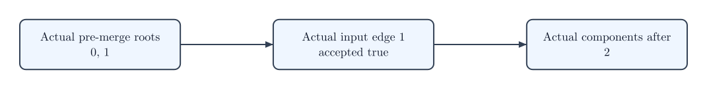
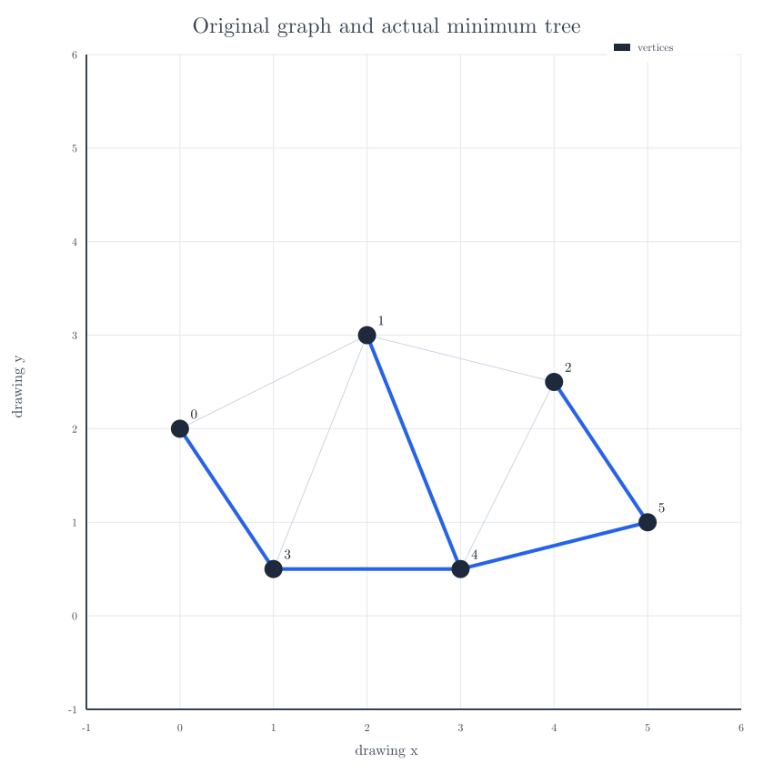
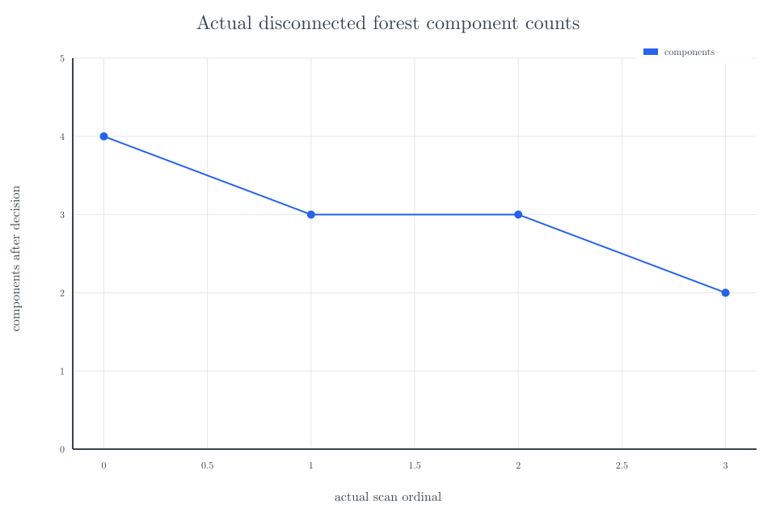
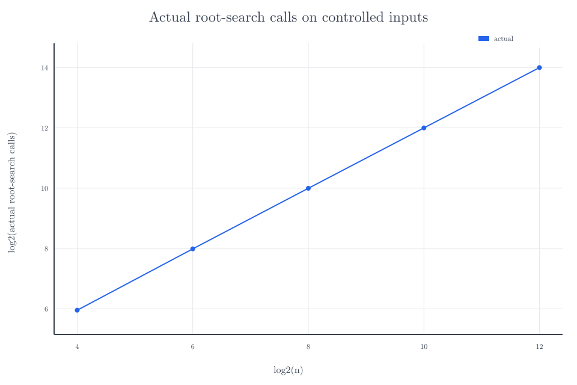

Kruskal forests through actual union decisions
Abstract
Connecting weighted vertices as cheaply as possible requires selecting edges without forming cycles. Kruskal processes edges by increasing weight and joins distinct components, producing a minimum spanning tree when the graph is connected and a minimum forest otherwise. We use the existing canonical native work/trace API to inspect actual root decisions, retain the original six-vertex nine-edge graph, and test stable ties, loops, disconnected inputs and the distinction between supplied edges and scanned edges.
Why the greedy edge is safe
Maintain a forest extendable to a minimum spanning forest. Its connected components define cuts. The next accepted edge is a lightest eligible edge crossing some current component cut. If an optimal extension lacks it, the path joining its endpoints contains another edge crossing that cut, whose weight is no smaller; exchange that edge for the selected one without increasing total weight. Induction preserves optimality. An edge whose endpoints already share a root would make a cycle, so rejecting it preserves the forest. Apply this argument independently to disconnected input components.
The library validates the complete graph, stably sorts finite signed weights, and uses path halving with union by rank. Equal weights preserve original input order; they can give multiple optimum forests, so deterministic output is not a uniqueness proof. Self-loops always reject, parallel edges retain distinct identities, and negative weights are valid. The scan stops as soon as n−1 edges have been accepted; sorting and complete validation still see all input records.
Actual roots explain an accepted edge
The tiny triangle includes a negative self-loop and a duplicate parallel edge. The diagram summarizes the first actual accepted union using the producing root identities. The table retains rejected scans as well; these roots are union-find implementation identities, not minimum-vertex labels.
#include <dm/dm.hpp>
int main() {
std::filesystem::create_directories("build");
const auto t =
dm::algorithms::kruskal_trace(3,
{{0, 0, -1}, {0, 1, 1}, {0, 1, 1},
{1, 2, 2}, {0, 2, 3}});
std::print("| actual scan | original edge identity | first root | second root | accepted | components " "after |\n| ---: | ---: | ---: | ---: | --- | ---: |\n");
for (std::size_t i = 0; i < t.steps.size(); ++i) {
const auto &e = t.steps[i];
std::print("| {} | {} | {} | {} | {} | {} |\n", i, e.input_index,
e.root_u, e.root_v, e.accepted, e.components_after);
}
const auto &e =
*std::find_if(t.steps.begin(), t.steps.end(), [](const auto &e) {
return e.accepted;
});
dm::graphics::Diagram d;
d.node("roots", {0, 0},
std::format("Actual pre-merge roots\n{}, {}", e.root_u, e.root_v)).node("decision", {6, 0}, std::format("Actual input edge {}\naccepted {}", e.input_index, e.accepted)).node("after", {12, 0}, std::format("Actual components after\n{}", e.components_after)).edge("roots", "decision").edge("decision", "after").save_svg("build/kruskal_union.svg");
}| actual scan | original edge identity | first root | second root | accepted | components after |
|---|---|---|---|---|---|
| 0 | 0 | 0 | 0 | false | 3 |
| 1 | 1 | 0 | 1 | true | 2 |
| 2 | 2 | 0 | 0 | false | 2 |
| 3 | 3 | 0 | 2 | true | 1 |

Original six vertices and nine edges
Retain every original tuple and drawing coordinate. All nine weights are distinct, so the connected graph has a unique minimum spanning tree. The actual selected total is independently checked against every five-edge spanning subset, rather than inferred from the figure’s geometry. Coordinates are for drawing only; they do not determine edge weights.
#include <dm/dm.hpp>
int main() {
std::filesystem::create_directories("build");
const std::vector<dm::algorithms::WeightedEdge> edges = {{0, 1, 7},
{0, 3, 5},
{1, 2, 8},
{1, 3, 9},
{1, 4, 6},
{2, 4, 10},
{2, 5, 4},
{3, 4, 3},
{4, 5, 2}};
const std::vector<double> x = {0, 2, 4, 1, 3, 5}, y = {2, 3, 2.5, .5, .5, 1};
const auto t = dm::algorithms::kruskal_trace(6, edges);
std::print("| actual selected ordinal | original endpoint u | original endpoint v | actual weight |\n| " "---: | ---: | ---: | ---: |\n");
for (std::size_t i = 0; i < t.outcome.result.edges.size(); ++i) {
auto[u, v, w] = t.outcome.result.edges[i];
std::print("| {} | {} | {} | {:.1f} |\n", i, u, v, w);
}
std::print("\nActual total {:.1f}; connected {}; input edges {}; actual scanned {}; root searches {}.\n",
t.outcome.result.total_weight, t.outcome.result.is_connected,
t.outcome.work.input_edges, t.outcome.work.scanned_edges,
t.outcome.work.find_calls);
auto p = dm::graphics::RPlot::create();
for (auto[u, v, w] : edges)
p.line({x[u], x[v]}, {y[u], y[v]}, "", {203, 213, 225}, 1);
for (auto[u, v, w] : t.outcome.result.edges)
p.line({x[u], x[v]}, {y[u], y[v]}, "", {37, 99, 235}, 4);
p.points(x, y, "vertices", {30, 41, 59}, 10);
for (std::size_t i = 0; i < x.size(); ++i)
p.text(x[i] + .15, y[i] + .16, std::to_string(i), {17, 24, 39}, 15);
p.size(850, 850).margins(95, 35, 60, 70).x_limits(-1, 6).y_limits(-1, 6).title("Original graph and actual minimum tree").x_label("drawing x").y_label("drawing y").save_svg("build/kruskal_original.svg");
}| actual selected ordinal | original endpoint u | original endpoint v | actual weight |
|---|---|---|---|
| 0 | 4 | 5 | 2.0 |
| 1 | 3 | 4 | 3.0 |
| 2 | 2 | 5 | 4.0 |
| 3 | 0 | 3 | 5.0 |
| 4 | 1 | 4 | 6.0 |
Actual total 20.0; connected true; input edges 9; actual scanned 5; root searches 10.

A forest and stable ties
The disconnected control has two separate pairs, a negative loop and a reverse parallel edge. It returns a minimum forest with connected=false, not a failed empty tree. Two equal-weight triangles illustrate another limit: permuting tied input edges can change which optimum tree is selected while preserving the optimum total.
#include <dm/dm.hpp>
int main() {
std::filesystem::create_directories("build");
const auto forest =
dm::algorithms::kruskal_trace(4,
{{0, 0, -10}, {0, 1, -2}, {1, 0, -2},
{2, 3, 3}});
std::print("| actual forest scan | input identity | accepted | components after |\n| ---: | ---: | --- " "| ---: |\n");
std::vector<double> x, y;
for (std::size_t i = 0; i < forest.steps.size(); ++i) {
const auto &e = forest.steps[i];
std::print("| {} | {} | {} | {} |\n", i, e.input_index, e.accepted,
e.components_after);
x.push_back(i);
y.push_back(e.components_after);
}
std::print("\nActual forest total {:.1f}; connected {}; accepted edges {}.\n",
forest.outcome.result.total_weight,
forest.outcome.result.is_connected,
forest.outcome.result.edges.size());
std::print("\n| tied input ordering | actual selected edge u | actual selected edge v | actual total " "|\n| --- | ---: | ---: | ---: |\n");
const std::vector<std::vector<dm::algorithms::WeightedEdge>> cases = {
{{0, 1, 1}, {1, 2, 1}, {0, 2, 1}}, {{0, 2, 1}, {1, 2, 1}, {0, 1, 1}}
};
for (std::size_t i = 0; i < cases.size(); ++i) {
const auto r = dm::algorithms::kruskal(3, cases[i]);
for (auto[u, v, w] : r.edges)
std::print("| {} | {} | {} | {:.1f} |\n", i, u, v, r.total_weight);
}
auto p = dm::graphics::RPlot::create();
p.line(x, y, "components", {37, 99, 235}, 2).points(x, y, "", {37, 99, 235},
5).y_limits(0, 5).title(
"Actual disconnected forest component counts").x_label(
"actual scan ordinal").y_label("components after decision").save_svg(
"build/kruskal_controls.svg");
}| actual forest scan | input identity | accepted | components after |
|---|---|---|---|
| 0 | 0 | false | 4 |
| 1 | 1 | true | 3 |
| 2 | 2 | false | 3 |
| 3 | 3 | true | 2 |
Actual forest total 1.0; connected false; accepted edges 2.
| tied input ordering | actual selected edge u | actual selected edge v | actual total |
|---|---|---|---|
| 0 | 0 | 1 | 2.0 |
| 0 | 1 | 2 | 2.0 |
| 1 | 0 | 2 | 2.0 |
| 1 | 1 | 2 | 2.0 |

Checking selected work without hiding sorting
The trace counts two root searches per scanned edge and partitions scans into accepted edges plus cycle rejections. It excludes path-halving steps, validation, sorting, allocations, copying and time. The standard whole-algorithm bound is O(n+M log(M+1)) with O(n+M) runtime storage; union-find adds near-linear amortized work. Selected counters alone are not a timing estimate.
For each n below, supply n negative loops, n−1 increasing chain edges and one heavy closing edge. Exactly2n input records are validated/sorted, but scanning stops after2n−1: the heavy final cycle is never visited. The actual counts check these formulas, rather than plotting theoretical curves as measured work.
#include <dm/dm.hpp>
int main() {
std::filesystem::create_directories("build");
std::vector<double> x, y;
std::print("| n | input edges | actual scans | actual accepted | actual rejected | actual find calls | " "twice actual scans |\n| ---: | ---: | ---: | ---: | ---: | ---: | ---: |\n");
for (std::size_t n : {16, 64, 256, 1024, 4096}) {
std::vector<dm::algorithms::WeightedEdge> e;
for (std::size_t i = 0; i < n; ++i)
e.emplace_back(i, i, -1);
for (std::size_t i = 1; i < n; ++i)
e.emplace_back(i - 1, i, double(i));
e.emplace_back(0, n - 1, 1e6);
const auto a = dm::algorithms::kruskal_work(n, e);
std::print("| {} | {} | {} | {} | {} | {} | {} |\n", n,
a.work.input_edges, a.work.scanned_edges,
a.work.accepted_edges, a.work.cycle_rejections,
a.work.find_calls, 2 * a.work.scanned_edges);
x.push_back(std::log2(n));
y.push_back(std::log2(a.work.find_calls));
}
auto p = dm::graphics::RPlot::create();
p.line(x, y, "actual", {37, 99, 235}, 2).points(x, y, "", {37, 99, 235}, 4).title("Actual root-search calls on controlled inputs").x_label("log2(n)").y_label("log2(actual root-search calls)").save_svg("build/kruskal_work.svg");
}| n | input edges | actual scans | actual accepted | actual rejected | actual find calls | twice actual scans |
|---|---|---|---|---|---|---|
| 16 | 32 | 31 | 15 | 16 | 62 | 62 |
| 64 | 128 | 127 | 63 | 64 | 254 | 254 |
| 256 | 512 | 511 | 255 | 256 | 1022 | 1022 |
| 1024 | 2048 | 2047 | 1023 | 1024 | 4094 | 4094 |
| 4096 | 8192 | 8191 | 4095 | 4096 | 16382 | 16382 |

Scope and verification
All endpoints must be in[0,n), all weights finite, and every accepted-edge sequential sum must remain finite. Empty/singleton graphs count as connected and return a zero total. Scalar/work calls retain no optional history. Trace mode owns original edge records, actual scan decisions and outcome; its million-entry quota counts complete M input edges plus actual scanned records, admitted before copying/scanning. Zero disables only that quota, whose record count excludes output/runtime storage, capacities and bytes/RAM. This report reuses the existing canonical Kruskal API; no second implementation is introduced.
Independent Prim-style minimum-forest calculations checked101 weighted graphs
and238 actual scans, including original root-component membership, stable edge
order, acceptance and early termination. Native complete spanning-subset
enumeration certifies the original unique total20, with explicit
disconnected/tie/parallel/loop controls and selected-work identities. Existing
canonical Kruskal and Euclidean-MST trace/certificate tests also passed; no
duplicate core implementation was introduced. The ten-report shared build
passed141 native CTest cases,45 directly instrumented
address/undefined-behaviour sanitizer cases,90 compiled/executed public
examples,412/412 scoped file definitions plus11/11 changed lagged-Fibonacci
engine definitions, and ten representative clangd hovers. All four complete
report programs executed and all four native figures were visually reviewed.
Receipts and repeatable checks are retained under
build/mepml-conversion/batch-184-193/.
References
J. B. Kruskal, Jr.(1956), On the shortest spanning subtree of a graph and the traveling salesman problem, Proceedings of the American Mathematical Society7(1),48–50. Stable ties, disconnected forests and finite signed weights are explicit native contracts beyond the original distinct-positive-weight setting.